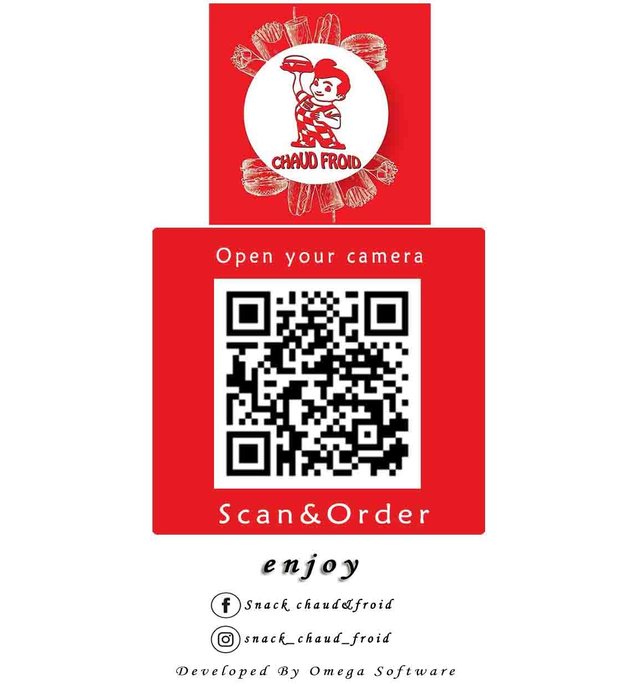
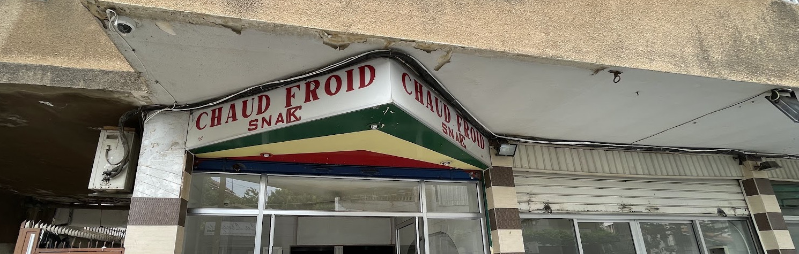
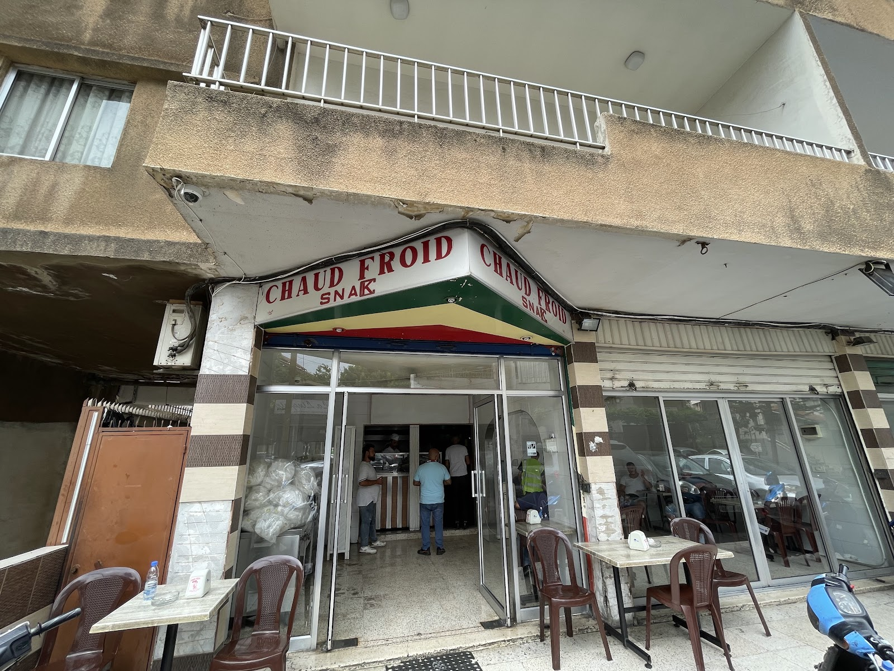
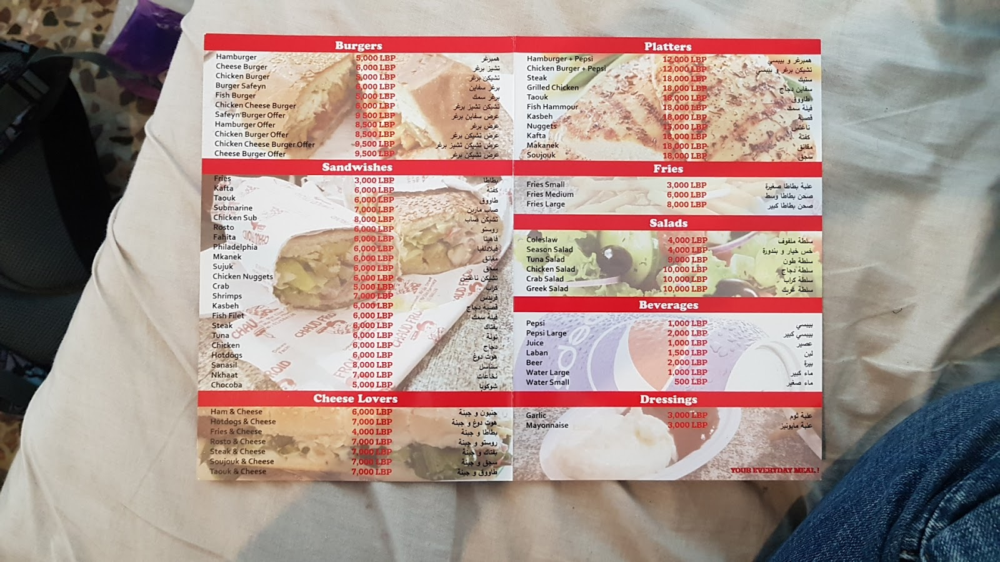
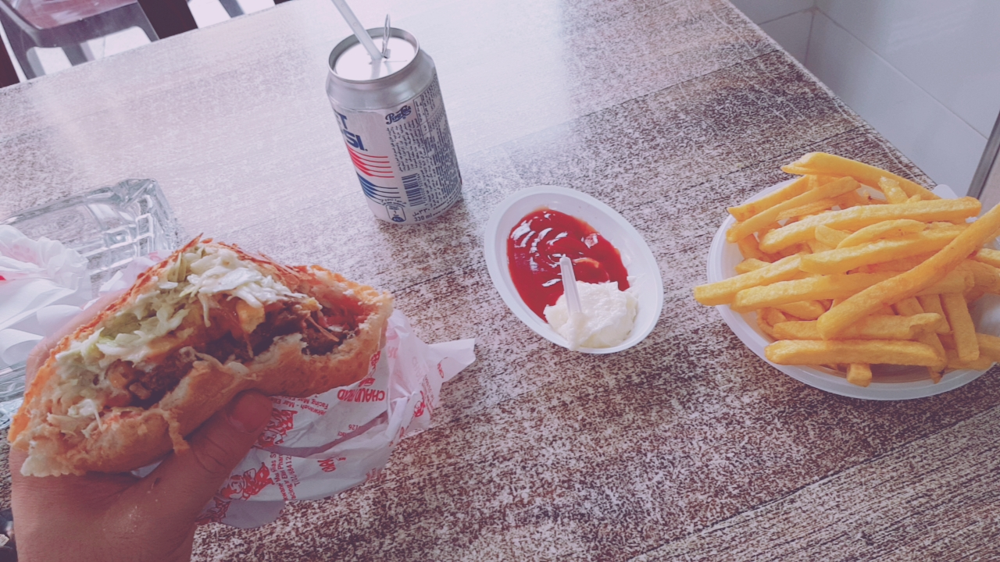
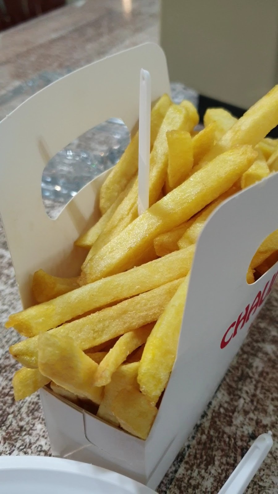
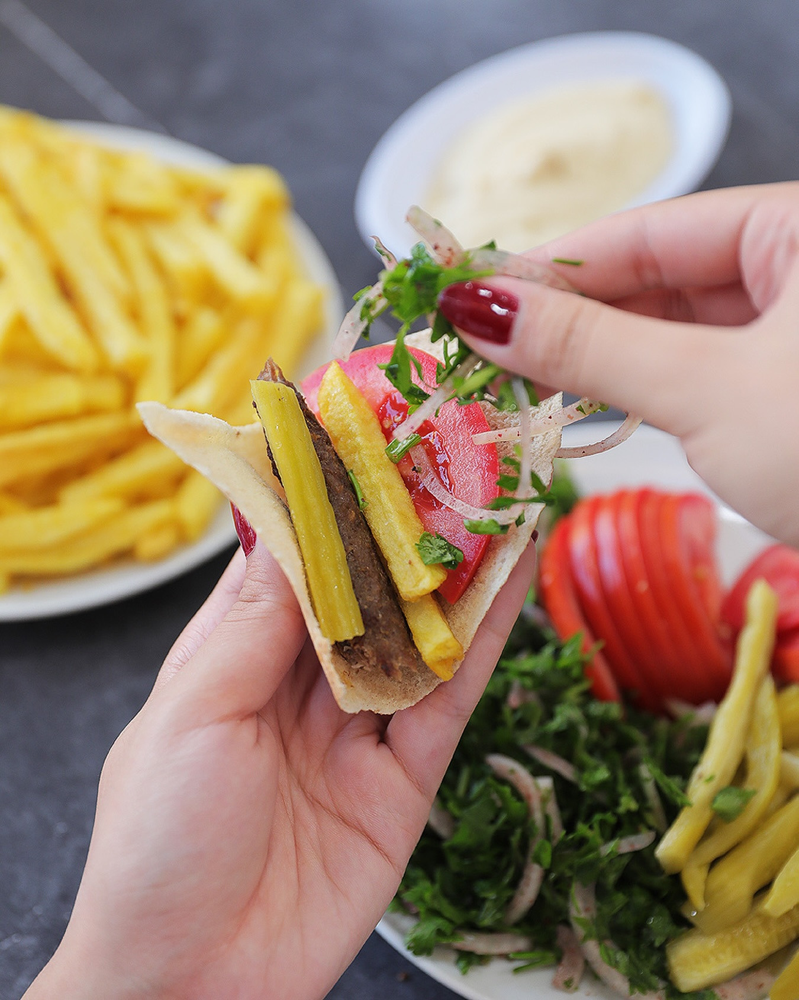

A snack that outlived the trends سناك عاش أكتر من الموضات









Tried Chaud Froid and honestly I was pleasantly surprised. The chicken sub is very good, full of flavor and loaded with ingredients like chicken, ham, cheese, tomatoes, pickles, lettuce, and mayo.Joe Turk
Snack Chaud Froid in Dekwaneh is a true gem in Lebanon's fast food scene. Serving customers since 1992, this family-run spot has built a loyal following,and for good reason.Serge El-Khazen
The chicken sub was toasted , generously filled with grilled chicken ; it was tasty . Portion is fulfilling. Less mayonnaise would have been perfect .Melted Butter
General Wazen, Dekwaneh, Lebanon
+961 1 684 126